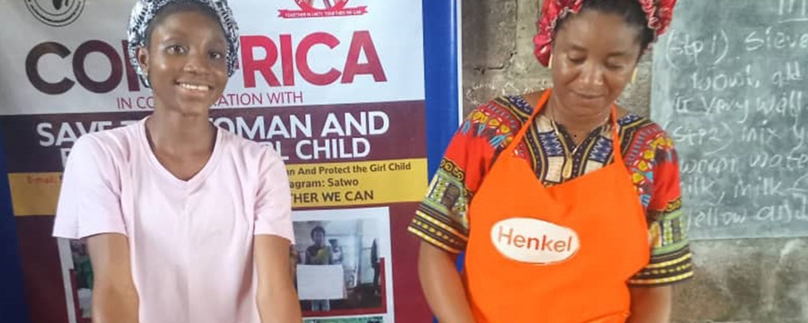
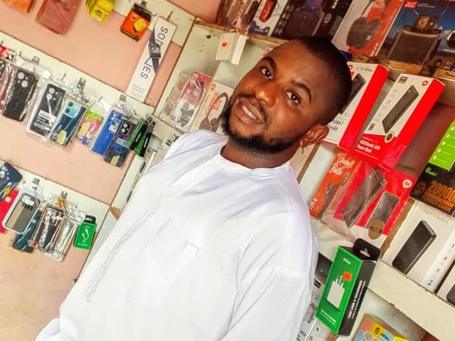

500+ business owners
Have received interest-free loans across the Ogoja–Ikom axis of Cross River State.


When a family cannot afford to keep a child in class, the barrier is income. The Economic Empowerment Programme lends to the parents — interest-free — so that a business can grow into school fees.
What it does
The programme was established to support underprivileged business owners, above all those who were struggling to provide school fees for their wards. It helps parents expand a business they already have, and encourages willing and underserved members of our communities to start one.
Have received interest-free loans across the Ogoja–Ikom axis of Cross River State.
The size of a loan, set by what the business is and needs, and by the funds available.
Across our three empowerment programmes, to date.
How it works
Beneficiaries are sought through the Catholic parishes. The programme also supports graduates waiting to begin the compulsory year of National Youth Service, who submit a business proposal that is reviewed before any money moves.
Guidance on establishing or expanding a small business and an income-generating activity, and on the practice of repayment.
Beneficiaries are accompanied after the loan, so that the business becomes something that lasts.
The repayment process has been about 80% successful, with minimal losses. Where it fails it is usually need, vulnerability, or a business that was never viable.
Three programmes
Igoli, Ogoja. Launched in 2022 with a US $40,000 fund and commissioned by Bishop Donatus Akpan, it offers soft loans and grants so that parents can build a business and keep their children in school.
Ikom. Gives parishioners access to funds for small and larger enterprises.
Micro-credit for poor parents and guardians, especially in communities where a Community Education Centre operates.
Two beneficiaries
Received ₦3,000,000 to furnish and improve his gym. He has since recorded his own account of what the programme meant.
Started a Point of Sale business and expanded it into phone accessories. He recently gave 20 POS machines to 20 other business owners — one loan, rippling outward.

Meaningful empowerment is not simply financial assistance. It is the opportunity, the confidence and the resources to build a livelihood.
Support the work
CORAfrica is a registered 501(c)(3) in the United States, so gifts from US donors are tax-deductible. Give monthly, and we can plan.